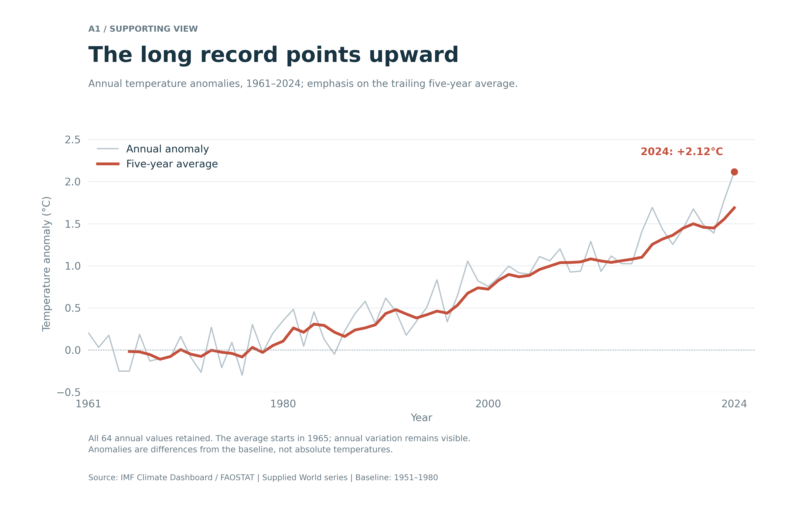
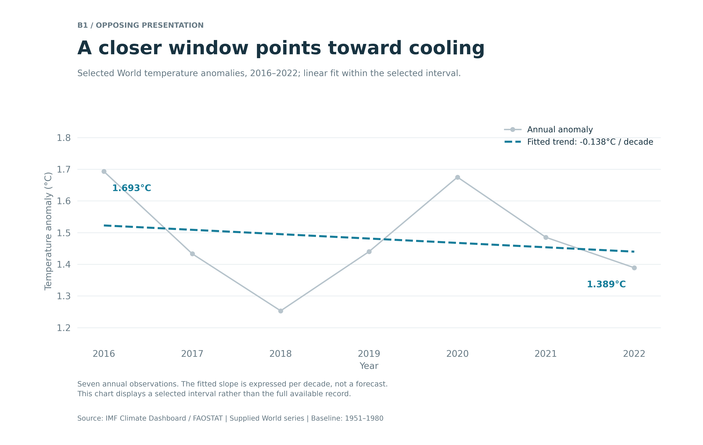

DSC 209 · Project 2
One Dataset, Two Temperature Stories
This report explores how time windows, visual emphasis, and statistical summaries can lead readers toward different interpretations of the same temperature record.
Proposition
The World temperature series shows sustained warming rather than a temporary fluctuation.
Both visualizations use the World series from the IMF Climate Dashboard’s Annual Surface Temperature Change dataset. The downloaded file contains annual observations from 1961 through 2024. Values are temperature anomalies in degrees Celsius relative to the 1951–1980 baseline, rather than absolute temperatures or changes from the preceding year.
I selected the existing World row and converted its year columns into a chronological series. All 64 annual values were available, so no missing observations were filled. I did not calculate an unweighted average of countries.
Visualization 1 · Supporting the proposition
The Long Record Points Upward

Design Decisions and Rationale
Scores are my assessments: −2 means fully deceptive, and +2 means fully earnest.
- Full available time span Score: +2 I included every year from 1961 through 2024 so that readers could judge the direction across the complete downloaded record. A shorter recent window would have made individual fluctuations more prominent, but I chose the full span because the proposition concerns sustained change.
- Trailing five-year average Score: +1.5 I calculated each average from the current year and the preceding four years, so the averaged line begins in 1965. This reduces annual noise and strengthens the long-term message, although it also delays the response to abrupt changes. I kept the annual series visible rather than replacing it with the smoother line.
- Shared linear axes and baseline reference Score: +2 Both lines use the same linear temperature scale, and the reference at zero identifies the historical baseline. A tighter vertical range would make changes appear steeper, but I retained a range that includes all annual observations and the baseline.
- Red emphasis on the average Score: +1 The thicker red line attracts attention to the persistent pattern, while the thinner gray line preserves the annual detail. This hierarchy is persuasive because readers are likely to follow the average first. I considered giving both lines equal weight, but that made their different roles less clear.
- Takeaway title and latest-year annotation Score: +1 The title tells readers what conclusion the chart supports, and the 2024 annotation makes the latest observation easy to locate. Highlighting a high endpoint can increase its rhetorical importance, so I kept the entire series visible and did not treat that single year as sufficient evidence of the long-term pattern.
Visualization 2 · Opposing presentation
A Closer Window Points Toward Cooling

Design Decisions and Rationale
- Selection of 2016–2022 Score: −2 I chose an interval beginning in a relatively warm year and ending before the higher observations in 2023 and 2024. The dates are labeled correctly, but selecting this window to argue against sustained warming leaves out context that would substantially change the interpretation. Using the full record would weaken the intended opposing message.
- Narrow vertical range Score: −1 The axis runs from approximately 1.15°C to 1.86°C, making differences within the interval more visually prominent. A nonzero axis is not inherently inappropriate for a line chart, but here it contributes to a cooling narrative when combined with the selected dates. Using the same limits as the first chart would make the short-term movements appear smaller.
- Linear fit expressed per decade Score: −1 I fitted an ordinary least-squares line to the seven annual observations and multiplied its annual slope by ten, giving approximately −0.138°C per decade. The calculation is accurate, but the per-decade unit can make the result feel more established than this short interval warrants. I identify the fitted dates and do not present the line as a forecast or a statistically demonstrated long-term trend.
- Cooling-oriented title and blue trend line Score: −1 The title directs attention toward cooling, and the blue dashed line reinforces that interpretation. I avoided a stronger claim such as “warming has stopped,” because the chart cannot establish that conclusion. Even with restrained wording, the framing can encourage readers to generalize beyond the displayed interval.
- All annual points within the interval remain visible Score: +2 I retained all seven observations instead of showing only the first and last values or the fitted line. This lets readers see the intervening rises and falls and recognize that the decline is not uniform. Removing those points would make the opposing argument simpler but less transparent.
Final Reflection
The main challenge in this project was making two opposing arguments without changing the underlying observations. The full record made the warming pattern straightforward to show, while the opposing view depended on narrowing the time window. Comparing the two designs made it clear that choosing what to include is already an important part of the argument, before colors or annotations are added.
What stood out to me was that a chart could contain accurate values, readable labels, and a correctly calculated trend while still encouraging a misleading conclusion. The 2016–2022 slope is a valid description of that selected interval, but it does not overturn the longer-term pattern. The first chart also involves judgment: its moving average, red emphasis, and takeaway title guide attention toward persistence rather than variability.
I now think of ethical visualization as making the scope of the evidence clear enough that readers can assess the conclusion for themselves. Persuasion is reasonable when emphasis remains consistent with the data and important context stays accessible. It becomes misleading when a design encourages a broader claim than the evidence supports, especially by selecting dates or hiding relevant observations. Accurate calculations are necessary, but they are not enough without appropriate context.
Data Source
IMF Climate Change Indicators Dashboard , Annual Surface Temperature Change, World series. The downloaded file identifies FAOSTAT as its source. Both visualizations use temperature anomalies relative to the 1951–1980 baseline.
This report compares presentations of the supplied series. It does not estimate the causes of temperature change or establish statistical significance for the selected short-period trend.